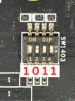
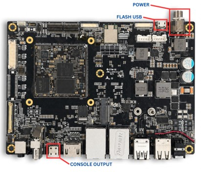

Ubuntu Flashing Guide For OSM-520PrerequisitesBefore proceeding, ensure your host machine is fully configured for flashing. Follow the setup guide for your operating system below, then return here once your environment is ready. Setup Tool Environment (Linux)This covers installing Genio Tools and all required dependencies on Linux: Setup Tool Environment (Linux) Setup Tool Environment (Windows)This covers installing Genio Tools and all required dependencies on Windows: Setup Tool Environment (Windows) Genio Tools version: This Ubuntu image requires Genio Tools v1.6.2 or newer. Confirm your version with genio-flash --version. Once your environment is set up and genio-config reports all checks as OK, proceed to the next section. Hardware SetupThe hardware setup is identical to the Yocto flow (same SoC and download interface). Boot Switch SettingBefore flashing, set the boot switch SW1403 to Download Mode:  Switch Position SW1403 1011 Cable Connections Power: Connect the power cable to the board power connector. USB (Flash): Connect a Micro-USB cable from the board’s flash port to your host machine.  Flash the Ubuntu ImageStep 1 - Locate the imageThe Ubuntu image is delivered as a folder of flash artifacts . The folder contains the flash manifest ubuntu.json alongside the partition images: OSM-520-UBUNTU-<version>/├── ubuntu.json # flash manifest (partitions + groups)├── ubuntu_adlink.img # root filesystem -> mmc0├── bl2.img # BL2 bootloader -> mmc0boot0├── u-boot-env.bin # U-Boot environment -> mmc0boot1├── fip.bin # bootloaders (A/B)├── firmware.vfat # firmware (A/B)└── bootassets.vfat # boot assets Open a terminal and navigate into the folder that contains ubuntu.json: Ubuntu (host) $ cd path/to/OSM-520-UBUNTU-\<version\>/ Windows (host) $ cd path\to\OSM-520-UBUNTU-<version>\ Note: Replace <version> with the actual release (for example 1v0_26_07_24 ). genio-flash readsubuntu.json from the current directory, so make sure you are inside the folder that contains it. Step 2 - Start flashingWith the hardware set up and the terminal in the image folder, run: $ genio-flash --uboot-env-size 8192 If the board does not automatically enter Download Mode, manually reset it by toggling the power. Flashing will begin automatically once the board is detected. Note: SW1403 sets the boot mode (Download Mode), while SW1401 is the power switch used to reset the board after the boot mode has been set. Expected OutputThe flow detects the MediaTek SoC ( hw_code 0x8189 ), erases the boot areas, then flashes each partitiondefined in ubuntu.json. A successful run ends with Rebooting OKAY. Genio Tools: v1.7.0Ubuntu Image: edition: Ubuntu classic/core images version: 24.04 codename: nobleWARNING:aiot:[Errno 0] Success: 'error creating GPIO chip iterator'WARNING:aiot:Board control failed. Possible causes are:1. This is not a Genio 350/700 EVK, nor a Pumpkin board.2. The board port UART0 is not connected.3. The UART0 port is being opened by another tool, such as TeraTerm on Windows.You can now manually reset the board into DOWNLOAD mode.INFO:aiot:Continue flashing...Looking for MediaTek SoC matching USB device 0e8d:0003Opening /dev/ttyACM0 using baudrate=115200Connected to MediaTek SoC: hw_code[0x8189]Sending bootstrap to address: 0x2001000Jumping to bootstrap at address 0x2001000 in AArch64 modeerasing mmc0< waiting for any device >Erasing 'mmc0' (bootloader) request sz: 0xee7400000, real erase len: 0x0OKAY [ 0.138s]Finished. Total time: 0.142serasing mmc0boot0Erasing 'mmc0boot0' (bootloader) request sz: 0x400000, real erase len: 0x400000OKAY [ 4.218s]Finished. Total time: 4.222serasing mmc0boot1Erasing 'mmc0boot1' (bootloader) request sz: 0x400000, real erase len: 0x400000OKAY [ 4.203s]Finished. Total time: 4.208sflashing mmc0=ubuntu_adlink.imgWarning: skip copying mmc0 image avb footer (mmc0 partition size: 0, mmc0 image size: 140728124274184).Sending sparse 'mmc0' 1/23 (254440 KB) OKAY [ 6.368s]Writing 'mmc0' OKAY [ 3.356s]Sending sparse 'mmc0' 2/23 (262140 KB) OKAY [ 6.539s]Writing 'mmc0' OKAY [ 3.294s]... (sparse chunks 3 through 22 continue in the same pattern) ...Sending sparse 'mmc0' 23/23 (130924 KB) OKAY [ 3.297s]Writing 'mmc0' OKAY [ 2.797s]Finished. Total time: 221.971sflashing mmc0boot0=bl2.imgWarning: skip copying mmc0boot0 image avb footer (mmc0boot0 partition size: 0, mmc0boot0 image size: 460528).Sending 'mmc0boot0' (449 KB) OKAY [ 0.031s]Writing 'mmc0boot0' OKAY [ 0.020s]Finished. Total time: 0.107sflashing mmc0boot1=u-boot-env.binWarning: skip copying mmc0boot1 image avb footer (mmc0boot1 partition size: 0, mmc0boot1 image size: 8192).Sending 'mmc0boot1' (8 KB) OKAY [ 0.002s]Writing 'mmc0boot1' OKAY [ 0.007s]Finished. Total time: 0.020sflashing bootloaders=fip.binSending 'bootloaders' (1776 KB) OKAY [ 0.048s]Writing 'bootloaders' OKAY [ 0.028s]Finished. Total time: 0.123sflashing bootloaders_b=fip.binSending 'bootloaders_b' (1776 KB) OKAY [ 0.046s]Writing 'bootloaders_b' OKAY [ 0.043s]Finished. Total time: 0.100sflashing firmware=firmware.vfatSending 'firmware' (32768 KB) OKAY [ 0.906s]Writing 'firmware' OKAY [ 0.417s]Finished. Total time: 1.352sflashing firmware_b=firmware.vfatSending 'firmware_b' (32768 KB) OKAY [ 0.808s]Writing 'firmware_b' OKAY [ 0.408s]Finished. Total time: 1.225sflashing bootassets=bootassets.vfatSending 'bootassets' (32768 KB) OKAY [ 0.841s]Writing 'bootassets' OKAY [ 0.400s]Finished. Total time: 1.271sRebooting OKAY [ 0.002s]Finished. Total time: 0.052s Flashing is complete once you see Rebooting OKAY at the end of the output. The board reboots automatically into Ubuntu 24.04 (Noble) after flashing finishes. After flashing: return SW1403 to its normal (non-download) boot position before the next power cycle, so the board boots from UFS instead of re-entering Download Mode.(0011) Update the KernelConnect an Ethernet cable to the OSM-MTK520 target. Compress the output Debian packages using the following command. Use the exact file name shown below, as the setup script depends on it. cd path/to/OSM-520-UBUNTU-<version>/cp osm_mtk_520_ufs-updates.zip update_osm_mtk520.sh {USB_DRIVE}/. Copy the compressed file to the target module using a USB drive or SCP, along with the setup script in the release. Ensure that both the script file and the compressed package are placed in the same directory. Connect the USB drive to the OSM-MTK520 and execute the following commands: $ mkdir /home/Images$ cp {USB_DRIVE}/osm_mtk_520_ufs-updates.zip /home/Images$ cp {USB_DRIVE}/update_osm_mtk520.sh /home/Images$ cd /home/Images$ sudo chmod +x update_osm_mtk520.sh$ sudo ./update_osm_mtk520.sh After a successful reboot, the updated Ubuntu image will boot on the OSM-MTK520.